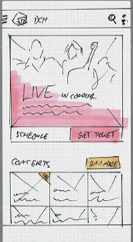

공공 문제를 해결해야 할 첫 번째 주체는 정부입니다. 하지만 여러 가지 이유로 정부도 제 역할을 못하는 경우도 종종 생깁니다. 이때 시민이 직접 나서 공공 문제를 풀어내는 사례가 적지 않습니다. 이런 활동을 ‘시빅해킹’(civic hacking)이라고 부릅니다.
CodeAcross @인천
전세계 시민들과 함께하는 시빅해킹 이벤트
3월 12일(토) 오후 1:00 ~ 6:00
송도 창조경제혁신센터
Organized by CodeForIncheon
우리가 살고있는 지역사회를 함께 개선해 볼까요?
참석하기CodeAcross 행사란
3월의 어느 주말, 전 세계의 활동가들이 같은 날 같은 시간 각자의 도시에 함께 모입니다. 각자 자신의 도시에 활용할 수 있는 주제를 중심으로, 시민들이 직접 창의적인 시빅해킹 활동에 참여해 볼 수 있습니다.
주제 : Make it yourself
활동 : Group Paper Prototyping
행사 일시 : 2016년 3월 12일(토) 오후 1시~6시
행사 장소 : 인천 송도 창조경제혁신센터 7층 (*제물포역 아님)
기타 : 공간이 협소하여 참석자는 선착순 40명으로 제한합니다
누가 참석하죠
어떤 활동을 하나요?
"페이퍼 프로토타이핑(Prototyping)을 합니다."
내 주위의 가장 사소한 필요, 아주 작은 불편을 우리가 함께 모여 직접 개선해 본다면 어떨까요? 더 나은 삶을 만들 수 있는 나만의 서비스를 직접 기획하고 만드는 전문적인 활동에 참여해 보세요.
행사소개
코드포인천 Organizer
코드포인천 커뮤니티와 행사안내
시빅해킹 세션 (Civic Hacking)
시빅활동가 홍대의, 유호균
Civic Hacking과 Hack Night에 대한 소개
브레인스토밍 (Brain Storming)
팀별 토의
4~5명씩 팀 구성, 그룹별 프로젝트에 대한 아이디어 토론/기록, 아이디어 공유
프로토타이핑 (Prototyping)
팀 활동 / 발표 / 공유
팀별 프로젝트 기획,서비스/UI 디자인 프로토타이핑 활동
작성된 프로토타입은 2016년 상반기 코드포인천 핵나잇 활동을 통해 함께 완성시켜 갑니다.



Civic Hacking
“대부분의 사람들이 해킹이라는 단어를 들으면 개인 정보를 훔치는 범죄자의 이미지를 떠올리게 되죠. 하지만 사용하는 사람들의 의도에 따라 해킹은 긍정적인 영향도 가져올 수 있어요. 시빅해킹이 대표적이죠. 인터넷을 통해 연결된 시민들이 신속하고 창의적인 방법으로 협업해 정부가 해결하지 못한 도시의 사회 이슈를 해결하는 일을 하죠.”
국회의원 활동 감시 사이트를 만든 서울대 산업공학과 박사과정 박은정 씨(왼쪽)와 이화여대 미디어디자인전공 석사과정 윤주희 씨. 이들은 “일반인들과 국회의원들 사이에 서로 소통할 수 있는 작은 다리를 놓고 싶었다”고 말합니다. 20대 젊은이들이 국회의원 입법 활동 정보를 공유하고 감시할 수 있는 인터넷 사이트를 만들었습니다.
코드 포 인천은 전세계적으로 진행되는 시민들의 자발적 소프트웨어 개발 모임입니다. 이들은 ‘시빅 해킹(Civic hacking)’을 표방하며, 정부에 대한 정보공개 운동 및 공개된 데이터를 이용해 서비스를 기획/개발하는 활동을 하는 그룹입니.